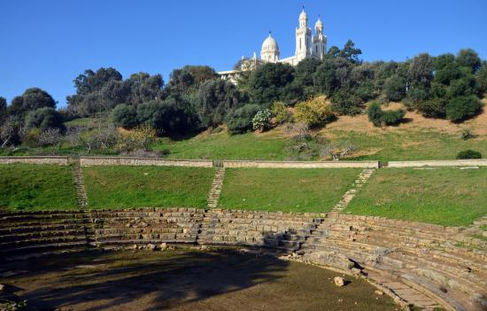
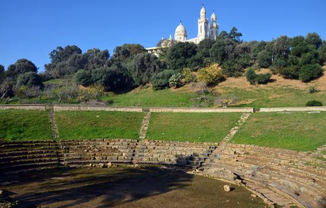
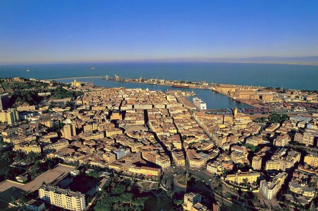
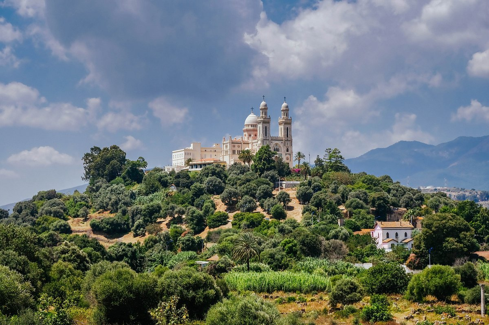
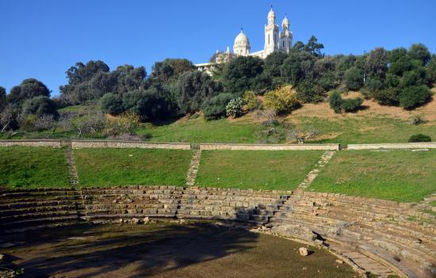
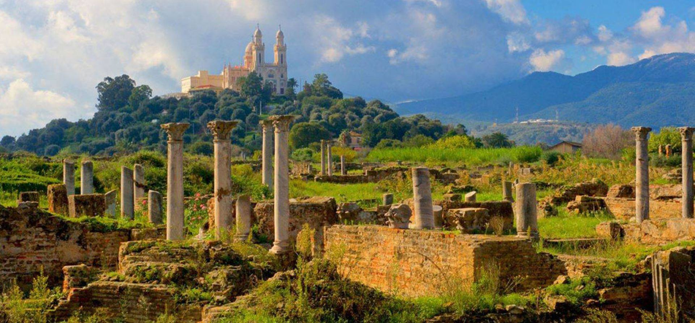

Hippone, également connue sous le nom d'Hippone Romaine, est une ancienne ville romaine située à proximité de la ville moderne d'Annaba en Algérie. Fondée par les Phéniciens au 12ème siècle av. J.-C., la ville a été ensuite occupée par les Romains et est devenue une importante colonie romaine.
La Basilique Saint-Augustin, située à Annaba en Algérie, est une église catholique dédiée à Saint Augustin, l'un des plus importants théologiens et philosophes de l'Église catholique. La construction de la basilique a débuté en 1881 et s'est achevée en 1900, mais elle a été consacrée en 1914. La basilique Saint-Augustin est un magnifique exemple d'architecture néo-byzantine, avec des influences romanes et mauresques. Elle est célèbre pour sa grande coupole centrale et ses magnifiques vitraux qui racontent des épisodes de la vie de Saint Augustin. L'intérieur de la basilique est richement décoré de marbre, de mosaïques et de sculptures.
La basilique Saint-Augustin est un lieu de pèlerinage important pour les fidèles catholiques et les visiteurs venant du monde entier. Elle abrite les reliques de Saint Augustin, ce qui en fait un lieu de recueillement et de spiritualité pour de nombreux croyants. La basilique est également un symbole de la présence chrétienne en Algérie et de l'héritage de Saint Augustin dans le pays.
Les ruines d'Hippone, également connues sous le nom d'Hippone Romaine, sont un site archéologique majeur situé à proximité de la ville moderne d'Annaba en Algérie. Fondée par les Phéniciens, la ville a été plus tard occupée par les Romains et est devenue une importante colonie romaine.
Les ruines d'Hippone comprennent divers vestiges qui témoignent de la grandeur passée de la ville. Parmi les éléments les plus remarquables figurent l'amphithéâtre, les thermes, les basiliques, les maisons romaines, les remparts et les voies pavées. Ces ruines offrent un aperçu fascinant de l'architecture romaine et de la vie quotidienne à l'époque antique.

Un des aspects les plus notables des ruines d'Hippone est le lien avec Saint Augustin, l'évêque et philosophe célèbre. Il a vécu à Hippone et y a écrit certaines de ses œuvres les plus importantes. Sa présence a laissé une marque indélébile sur la ville et son héritage culturel.
Les ruines d'Hippone sont un site incontournable pour les amateurs d'histoire, d'archéologie et de patrimoine. Ils attirent des visiteurs du monde entier qui viennent admirer ces vestiges bien préservés et en apprendre davantage sur l'histoire de cette ancienne ville romaine.
